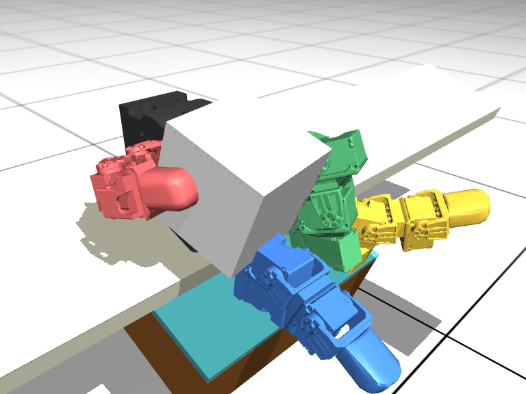
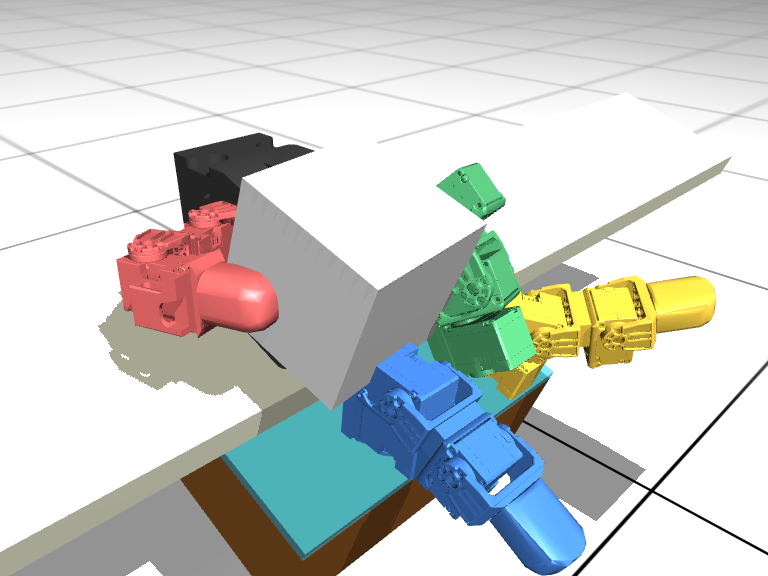
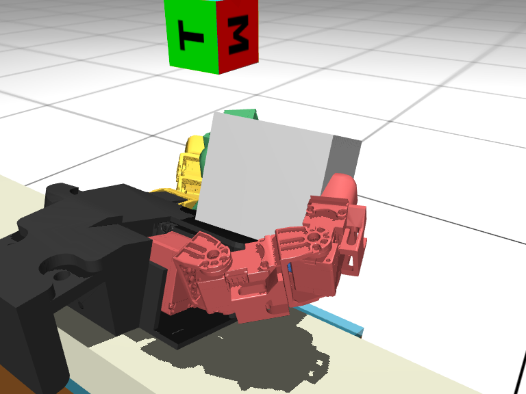

시뮬레이션 연구 결과입니다. 실물 90도 회전과 안정 파지는 아직 완료되지 않았습니다. 새 실물 실행 명령은 없습니다. 방금 마친 정지 배치 촬영은 반복하지 않아도 됩니다.
시뮬레이션 연구 결과입니다. 실물 90도 회전과 안정 파지는 아직 완료되지 않았습니다. 새 실물 실행 명령은 없습니다. 방금 마친 정지 배치 촬영은 반복하지 않아도 됩니다.
기존 회전 중 약66.6도 상태에서 중지와 엄지 접촉을 아래로 옮기는 경로를 만들었습니다. 기본 모델의 마지막 방향은 약63.8도입니다. 방향을 약90도로 완성하는 과제는 남아 있습니다.
원래 배치부터 새 파지까지9조건을 연속 재생한 결과,8조건에서 지지를 유지했고1조건은 움직이기 전 배치가 이탈했습니다. 통과한 조건의 마지막 고정 구간에서 방향 변화는 최대1.23도, 중심 이동은 최대0.92mm였습니다. 이는 가설 물성의 모델 결과이며 실물 힘 측정이 아닙니다.


파랑=검지, 초록=중지, 노랑=약지, 빨강=엄지. 회색 큐브와 로봇은 저장된 자유물체 시뮬레이션입니다.
이 영상은 전체90도 회전 영상이 아닙니다. 약66도 상태부터 접촉점을 내리는 후반부만 보여줍니다.

임의의±0.002Nm를 강체 큐브에 가한 진단입니다. 실제 왼손 힘이나 독립적으로 움직이는 루빅 큐브 레이어를 재현한 시험은 아닙니다. 이득3종류와 마찰3종류를 조합해 각9조건을 확인했습니다.
| 후보 | 유지 기준 통과 | 최대 방향 변화 | 최대 이동 |
|---|---|---|---|
| original | 9/9 | 1.49° | 0.67mm |
| thumb8 | 9/9 | 0.78° | 0.31mm |
| pair8_12 | 9/9 | 0.57° | 0.43mm |
| pair20_16 | 9/9 | 0.61° | 0.44mm |
아래쪽 파지 후보는 두 손끝이 윗층90도 회전 공간을 비웠습니다. 손 전체56개 충돌 형상까지 검사하면 중지의 중간 및 끝 모터 몸통 쪽에서 간섭이 남습니다. 손끝만 확인해서 왼손 회전이 가능하다고 판정하지 않았습니다.
검지를 세 번째 접촉으로 옮기는7순서 중5순서는 기존 충돌·추종 한도를 지켰고, 마디부터 굽히는2순서는 추종 한도에서 거부했습니다. 세 번째 접촉은 아직 주 파지를 대체할 만큼 검증되지 않았습니다.
| 뿌리 추가 틱 | 초기 배치 | 마지막 방향 변화 |
|---|---|---|
| 128 | 초기 배치 이탈 | — |
| 144 | 통과 | 64.4° |
| 152 | 통과 | 65.5° |
| 168 | 초기 배치 이탈 | — |
| 176 | 통과 | 66.3° |
큐브 몸통 지지를 유지하면서 중지 몸통도 윗층 회전 공간에서 빼는 재파지를 설계합니다. 부족한 전체 회전과 초기 배치 이탈도 해결한 뒤 실물 실행을 준비합니다. 기존 모터 구동력, 중단 기준, 관절 한계와 원본 시퀀스는 보존했습니다.
전체 수치 요약 · 배치부터 연속 재생 · 손 전체 간섭 근거